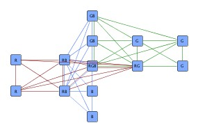
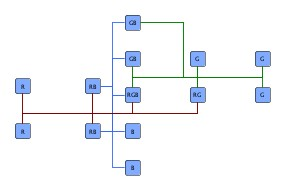
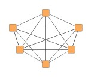
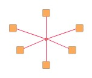
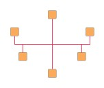
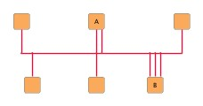
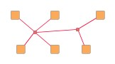
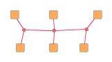
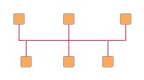
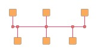

| Orthogonal Bus-style Edge Routing | ||
|---|---|---|
| Prev | Chapter 5. Automatic Graph Layout | Next |
This section presents orthogonal bus-style edge routing.
Orthogonal bus-style edge routing combines the (likely confusing) mass of edges in parts of a diagram where each node is connected to each other node in a concise, tree-like structure that consists of vertical and horizontal line segments. The positions of the nodes in a diagram are not altered by this algorithm.
The algorithm aims to find routes where all edge paths share as much way as possible. It yields long line segments where ideally all but the first and last segments of all edge paths are drawn on top of each other, with short connections branching off to the nodes. The short connections bundle the respective first or last segments of a node's incident edges.
Figure 5.113. Bus-style edge routing sample
|

|

|
| Diagram with three completely connected parts. | A clear representation of the same diagram using orthogonal bus-style edge routing. |
Carefully observe that the resulting representation, with many edge segments drawn on top of each other, leaves little room for a sensible interpretation of edge direction.
This routing style works on the set of edges of a complete (sub)graph, (a part of) a diagram where each node is connected to a each other node. Mathematically, this set of edges is equivalent to a hyperedge, an edge that not only connects two nodes, but a set of nodes with each other.
The orthogonal edge paths that are calculated for the set of edges form a representation that, in its entirety, is called bus-style representation or often also simply bus. This bus consists of bus connections, which simply mean the (ideally) short line segments directly starting at the nodes, and the backbone segments.
Backbone segments are "at the heart" of the representation and refer to the vertical and horizontal line segments where the line segments from the nodes (the bus connections) end.
Figure 5.114. Replacing the set of edges in a complete graph by a bus-style representation
|

|

|

|
| A complete graph, where each node is connected to each other node. | The set of edges (conceptually) reduced to a star-like hyperedge. | Bus-style representation of the edges. The edge set is the same as in the initial figure, however, edge paths are drawn on top of each other. |
The orthogonal bus-style edge routing algorithm uses a two-phase process, basically:
Table 5.83, “Relevant classes for this algorithm” lists the relevant classes for the orthogonal bus-style edge routing algorithm.
Table 5.83. Relevant classes for this algorithm
| Classname | Description |
|---|---|
| BusRouter |
Main algorithm. See the description below. |
| BusDescriptor |
Provides bus-related configurations for an edge. Determines the bus ID, most notably. See Related Classes. |
| BusRepresentations |
Facilitates generation of the set of edges of a complete subgraph from a conceptually equivalent reduced structure, the hub structure. Also supports conversion of bus-style representations to hub structures. See Related Classes. |
Class BusRouter is a layout algorithm
for routing the set of edges of complete subgraphs.
The positions of the nodes in a diagram are not altered by this algorithm.
is a layout algorithm
for routing the set of edges of complete subgraphs.
The positions of the nodes in a diagram are not altered by this algorithm.
The edge paths that are generated by this algorithm form a so-called bus-style representation that consists of vertical and horizontal line segments only, where many edge paths are drawn on top of each other. This bus-style representation resembles a tree-like structure that connects the nodes.
To calculate actual bus-style representations, BusRouter needs a mapping to determine which edges belong to a common bus. The mapping that assigns a bus ID to each edge is specified using the BusDescriptor class.
A data provider holding BusDescriptor objects is expected to be registered with
the graph using the EDGE_DESCRIPTOR_DPKEY look-up key.
During layout calculation, BusRouter first retrieves the data provider using the
look-up key, and afterwards retrieves the contained information.
Note that in the absence of an individual bus ID for an edge, a bus consisting only
of the single edge is created.
look-up key.
During layout calculation, BusRouter first retrieves the data provider using the
look-up key, and afterwards retrieves the contained information.
Note that in the absence of an individual bus ID for an edge, a bus consisting only
of the single edge is created.
Example 5.47. Creating the mapping for buses
// 'graph' is of type y.layout.LayoutGraph.
// Create bus ID objects.
String myBusID = "This is the first bus.";
String myOtherBusID = "A second bus.";
// Create edge map that is used as a data provider later on.
EdgeMap em = Maps.createHashedEdgeMap();
// Establish a mapping from edges to bus IDs.
for (EdgeCursor ec = graph.edges(); ec.ok(); ec.next()) {
Edge e = ec.edge();
if (doesEdgeBelongToFirstBus(e)) {
em.set(e, new BusDescriptor(myBusID));
}
else if (doesEdgeBelongToSecondBus(e)) {
em.set(e, new BusDescriptor(myOtherBusID));
}
// If there is no BusDescriptor for an edge in the data provider, the edge
// will be routed as a "bus of its own" consisting only of the single edge.
}
// Register the edge map as a data provider with the graph.
graph.addDataProvider(BusRouter.EDGE_DESCRIPTOR_DPKEY, em);
// Invoke buffered layout.
invokeBufferedLayout(graph, new BusRouter());
BusRouter provides a set of options that affect the routing behavior. This section highlights some of the configuration options available.
The setScope(byte) method
determines the set of edges that the router should process.
When only a subset should be routed, a data provider holding the subset information
for each edge is looked up.
The data provider is expected to be registered with the graph using the EDGE_SUBSET_DPKEY
method
determines the set of edges that the router should process.
When only a subset should be routed, a data provider holding the subset information
for each edge is looked up.
The data provider is expected to be registered with the graph using the EDGE_SUBSET_DPKEY look-up key.
look-up key.
SCOPE_ALL |
|
| Description | Routes all edges in the graph. |
SCOPE_SUBSET |
|
| Description | Routes only the specified subset of edges in the graph. |
The following properties affect the backbone selection phase of the algorithm, where good initial backbone segments are calculated.
| Minimum Backbone Segment Length | |
| API | void setMinimumBackboneSegmentLength(double minimumLength) |
| Description | Sets the minimum length of a backbone segment. This value is used to select initial backbone segments. Note that the final lengths of backbone segment may not comply with this setting. |
| Preferred Backbone Segment Count | |
| API | void setPreferredBackboneSegmentCount(int preferredCount) |
| Description | Sets the preferred number of backbone segments with the same orientation. This value is used to select initial backbone segments. Note that the final number of vertical (horizontal) backbone segment may not comply with this setting. |
During the routing and recombination phase, these settings are used:
| Minimum Bus Connections Count | |
| API | void setMinimumBusConnectionsCount(int minimumCount) |
| Description | Determines the minimum number of bus connections a backbone segment must have. |
| Crossing Cost | |
| API | void setCrossingCost(double cost) |
| Description | Determines a "penalty" for edge crossings. Good values for a crossing penalty lie in the range from 1.0 to 3.0. By default this value is set to 1.0. |
Distances and grid routing options have effect across all phases.
| Minimum Edge Distance | |
| API | void setMinimumDistanceToEdge(int dist) |
| Description | Determines the distance between any two edge segments. |
| Minimum Distance to Node | |
| API | void setMinimumDistanceToNode(int dist) |
| Description | Determines the distance between edge segments and node sides. |
| Route on Grid | |
| API | void setGridRoutingEnabled(boolean enabled) |
| Description | If set, then all edge paths will be routed on grid lines of a predefined grid. |
Incremental routing means generation of a bus-style representation using an already existing bus-style representation as sketch. It can be used when
Incremental routing of bus-style representations is supported by denoting so-called fixed edges using the corresponding BusDescriptor property. When rearranging existing edges or adding new nodes and edges to an existing bus, the paths of non-fixed edges are calculated anew. The structure induced by the fixed edges must be orthogonal and cycle-free.
In the initial phase, appropriate backbone segments are determined from the structure of the fixed edges with respect to the Minimum Backbone Segment Length and Preferred Backbone Segment Count settings. In the second phase, bus connections from nodes of non-fixed edges to the determined backbone segments are calculated as described above.
Class BusDescriptor configures bus-related
options for edges.
The following options can be set:
configures bus-related
options for edges.
The following options can be set:
Class BusDescriptor provides a number of options for bus configuration:
| Bus ID | |
| API | void setID(Object id) |
| Description | Determines the bus ID of an edge. |
Support for incremental scenarios is provided by the following property. The paths of non-fixed edges are calculated anew when rearranging an existing bus-style representation.
| Fixed Edge | |
| API | void setFixed(boolean fixed) |
| Description | Determines whether an edge is fixed or not. The paths of non-fixed edges will be routed anew when rearranging an existing bus-style representation. |
The following methods allow to set optional group IDs for edge ends. These serve to partition the set of edge ends connected to a node and allow to create separate bus connections at a node.
Note that although the direction of the edges is irrelevant for bus-style edge routing in general, it becomes relevant in conjunction with setting group IDs. To allow different group IDs for the ends of an edge, the terms "source" end and "target" end of the underlying technical representation of an edge come into play.
| Source End Group ID | |
| API | void setSourceGroupID(Object sourceGroupID) |
| Description | Determines the group ID of an edge's source end. Group IDs allow to create separate bus connections at a node. |
| Target End Group ID | |
| API | void setTargetGroupID(Object targetGroupID) |
| Description | Determines the group ID of an edge's target end. Group IDs allow to create separate bus connections at a node. |
Separate bus connections at nodes are illustrated in Figure 5.115, “Edge grouping by IDs”.
Figure 5.115. Edge grouping by IDs
|

|
| Separate bus connections at nodes A (2 bus connections) and B (3 bus connections) achieved through different group IDs. |
The group IDs for the edge ends connecting to node B in the above figure could have been set up using the following code:
Example 5.48. Setup of group IDs for edge ends
// 'nodeB' is of type y.base.Node.
int numberOfGroups = 3, i = 0;
// Setup of group IDs for edge ends at node 'B' (nodeB).
Edge e = nodeB.firstInEdge();
while (e != null) {
BusDescriptor bd = myGetBusDescriptorForEdge(e);
// Set the group ID for the edge end connecting to nodeB.
bd.setTargetGroupID(new Integer(i++ % numberOfGroups));
e = e.nextInEdge();
}
// Retrieve the initial outgoing edge from the node.
e = nodeB.firstOutEdge();
while (e != null) {
BusDescriptor bd = myGetBusDescriptorForEdge(e);
// Set the group ID for the edge end connecting to nodeB.
bd.setSourceGroupID(new Integer(i++ % numberOfGroups));
e = e.nextOutEdge();
}
Example 5.47, “Creating the mapping for buses” shows how a BusDescriptor for a bus is created and associated with edges of a graph.
Class BusRepresentations is a utility
class that provides convenience conversion support related to bus representations.
is a utility
class that provides convenience conversion support related to bus representations.
BusRepresentations can be used to easily create the set of edges of a complete subgraph from a hub structure, a conceptually equivalent structure that uses a reduced number of edges which connect the (regular) nodes to a number of artificially introduced, so-called hub nodes. The hub nodes serve as a means to facilitate convenient definition of this structure.
A hub structure is a tree-like representation of a hyperedge, with the nodes of the complete subgraph being the leaves, and both root node and (an arbitrary number of) inner nodes denoted by the term hub nodes.
Hub nodes can be specified by means of a data provider holding boolean values, which is used with the following static conversion methods:
static EdgeList replaceHubsBySubgraph( LayoutGraph graph, DataProvider hubMarker, DataAcceptor descriptorAcceptor) |
|
| Description | Converts a hub structure to the set of edges of a complete subgraphs by creating new edges between regular nodes and removing the hub nodes. |
Hub structures are tree-like and can be specified as needed, i.e., there is no "canonical" way that a hub structure needs to look like to achieve a specific complete subgraph. For example, a minimal hub structure would consist of a single hub node where all regular nodes connect to. The first two structures in Figure 5.116, “Hub structures” are conceptually equivalent hub structures that represent the same hyperedge. Both result in the right figure after layout.
Figure 5.116. Hub structures
|

|

|

|
| A hub structure with two hub nodes (emphasized, in the middle) representing a hyperedge that connects nodes with each other (complete graph). | An equivalent hub structure with three hub nodes. | The resulting bus-style representation after layout. |
Converting the bus-style representation back to a hub structure is supported by the following method:
static void replaceSubgraphByHubs( LayoutGraph graph, EdgeCursor edgeCursor, DataProvider descriptorProvider, DataAcceptor busIDAcceptor) |
|
| Description | Converts the bus-style representation of the edges of a complete subgraph to a hub structure. Replaces bends in the bus-style representation and connection points of bus connections at backbone segments with hub nodes and uses only edges between hub nodes and hub nodes and regular nodes. The edge paths must form an orthogonal, cycle-free bus. Note that the hub structure is generated from the actual edge paths of the bus-style representation. |
Figure 5.117, “Hub structure after layout and conversion” shows the resulting hub structure after converting the bus-style representation as routed in Figure 5.116, “Hub structures”. Observe that there are five hub nodes that reflect the actual routes of the edge paths. Overall, this graph has 6 regular nodes, 5 hub nodes, and 10 edges (4 edges between hub nodes).
Figure 5.117. Hub structure after layout and conversion
|

|
| Hub structure with five hub nodes that result from the actual edge paths of the bus-style representation. |
Conversion from hub structure to edges of a complete subgraph and vice versa is also used in tutorial demo application BusRouterDemo.java.
Table 5.84, “Layout Stages” lists layout stages that can be used to enhance the routing process of class BusRouter.
Table 5.84. Layout Stages
| Classname | Description |
|---|---|
| PolylineLayoutStage |
With class BusRouter as the core layouter, this stage adds octilinear edge routing to the diagram that results from the orthogonal bus-style edge routing calculation. |
The bus ID, respectively the group ID, defines a strong relationship amongst edges. Edge ends at a common node from edges of the same bus connect to the node using a common location (thus forming a bus connection). Similarly, a common location is also used to connect all edge ends to the node whose edges have the same bus ID and where the edge ends have the same group ID associated. The respective common location for such a set of edge ends can be influenced using:
Orthogonal bus-style edge routing obeys both types of port constraints, weak and
strong.
The port constraints are retrieved from data providers that are bound to the
graph using the look-up keys
SOURCE_PORT_CONSTRAINT_KEY and
TARGET_PORT_CONSTRAINT_KEY
and
TARGET_PORT_CONSTRAINT_KEY ,
respectively.
,
respectively.
If edge ends at a common node from edges of the same bus are associated with inconsistent or even contradicting port constraints, then any of these port constraints can determine the actual location of the common port. The same holds for the common port of edge ends from edges that in addition have the same group ID.
In addition to the support provided for port constraints, orthogonal bus-style edge routing also supports the concept of port candidates. Both aspects, i.e., matching port candidates as well as modeling enhanced port constraints are supported.
For the matching of port candidates, the set of allowed anchor locations for bus
connections at the nodes are retrieved from a data provider that is bound to the
graph using the look-up key NODE_DP_KEY .
The subset of desired anchor locations where the source ports and target ports
of edges like to connect to are retrieved from data providers that are bound to
the graph using the look-up keys
SOURCE_PCLIST_DPKEY
.
The subset of desired anchor locations where the source ports and target ports
of edges like to connect to are retrieved from data providers that are bound to
the graph using the look-up keys
SOURCE_PCLIST_DPKEY and
TARGET_PCLIST_DPKEY
and
TARGET_PCLIST_DPKEY ,
respectively.
,
respectively.
The cardinality defined with a PortCandidateSet object is interpreted in terms of different bus IDs (group IDs) instead of number of edges.
See the section called “Port Candidates” for a detailed description of the port candidates concept.
For modeling enhanced port constraints, the set of possible port candidates for
the edges of a graph are retrieved from data providers that are bound to the
graph using the look-up keys
SOURCE_PCLIST_DPKEY and
TARGET_PCLIST_DPKEY
and
TARGET_PCLIST_DPKEY ,
respectively.
,
respectively.
If edge ends at a common node from edges of the same bus are associated with inconsistent or even contradicting port candidates, then any of these port candidates can determine the actual location of the common port. The same holds for the common port of edge ends from edges that in addition have the same group ID.
The following table lists the data provider look-up keys that are recognized by BusRouter in conjunction with port candidates.
Table 5.85. Data provider look-up keys
| Key | Element Type | Value Type | Description |
|---|---|---|---|
| NODE_DP_KEY |
Node | PortCandidateSet | For each node a PortCandidateSet object encoding the set of allowed anchor locations for bus connections. Note that the cardinality defined with a PortCandidateSet object is interpreted in terms of different bus IDs (group IDs) instead of number of edges. |
| SOURCE_PCLIST_DPKEY |
Edge | Collection | For each edge a java.util.Collection of PortCandidate objects that encode the subset of desired anchor locations where the source port likes to connect to. |
| TARGET_PCLIST_DPKEY |
Edge | Collection | For each edge a java.util.Collection of PortCandidate objects that encode the subset of desired anchor locations where the target port likes to connect to. |
Values of at least 3 (the default) for property Minimum Bus Connections Count result in longer backbone segments and clearly visible bus-like representations. The value should be increased for large graphs.
The value for property Minimum Backbone Segment Length should be at least as large as the typical width (height) of a node in the diagram.
Tutorial demo application BusRouterDemo.java presents bus-style edge routing. Layout module BusRouterModule.java shows configuration aspects of BusRouter and can also be used to interactively explore the effects of different settings.
Class BusRouter knows a number of data provider keys which are used to retrieve supplemental layout data for each graph element. The data is bound to the graph by means of a data provider which is registered using a given look-up key. Table 5.86, “Data provider look-up keys” lists all look-up keys that BusRouter tests during the layout process in order to query supplemental data.
Binding supplemental layout data to a graph is described in the section called “Providing Supplemental Layout Data”.
Table 5.86. Data provider look-up keys
| Key | Element Type | Value Type | Description |
|---|---|---|---|
| EDGE_DESCRIPTOR_DPKEY |
Edge | BusDescriptor |
For each edge a BusDescriptor |
| EDGE_SUBSET_DPKEY |
Edge | boolean | For each edge a boolean value indicating whether it should be routed or not. |
| SOURCE_PORT_CONSTRAINT_KEY |
Edge | PortConstraint | For each edge a PortConstraint object encoding its source end's port constraint. |
| TARGET_PORT_CONSTRAINT_KEY |
Edge | PortConstraint | For each edge a PortConstraint object encoding its target end's port constraint. |
| NODE_DP_KEY |
Node | PortCandidateSet | For each node a PortCandidateSet object encoding the set of allowed anchor locations for bus connections. Note that the cardinality defined with a PortCandidateSet object is interpreted in terms of different bus IDs (group IDs) instead of number of edges. |
| SOURCE_PCLIST_DPKEY |
Edge | Collection | For each edge a java.util.Collection of PortCandidate objects that encode the subset of desired anchor locations where the source port likes to connect to. |
| TARGET_PCLIST_DPKEY |
Edge | Collection | For each edge a java.util.Collection of PortCandidate objects that encode the subset of desired anchor locations where the target port likes to connect to. |
|
Copyright ©2004-2015, yWorks GmbH. All rights reserved. |